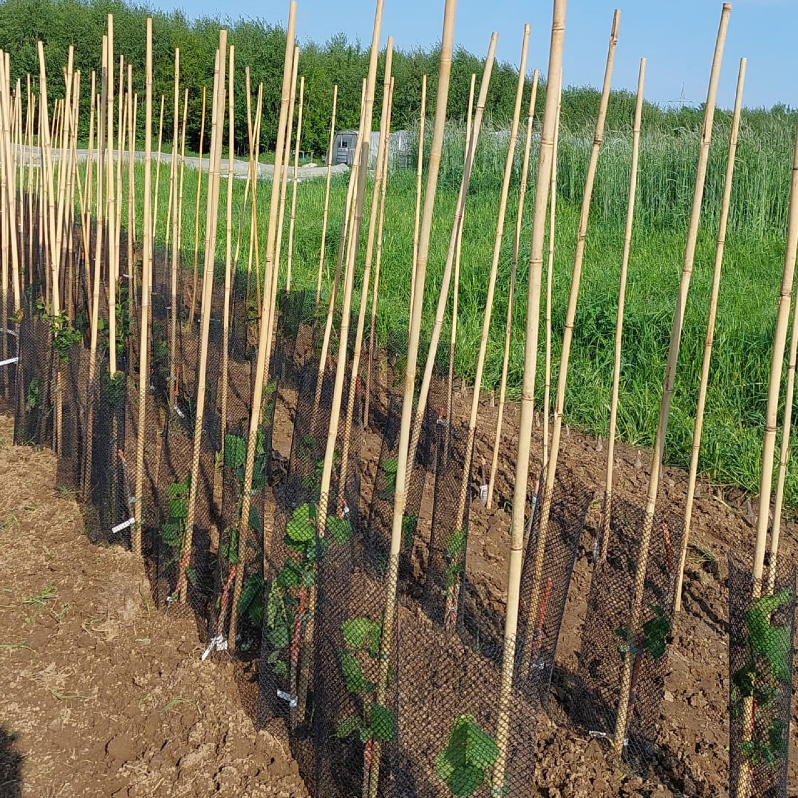
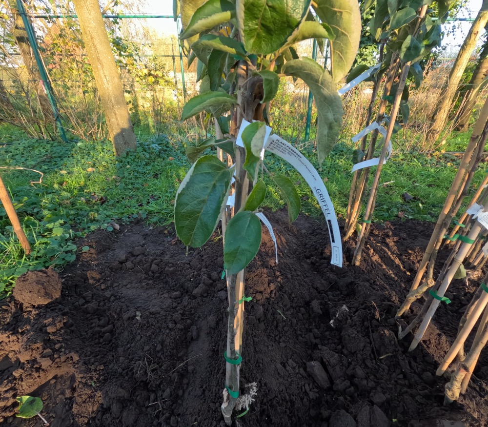

Wij zijn gestopt. Vier jaar geleden begon het als een experiment op een balkon in Antwerpen, ergens tussen winterse kabels en een doos met verwarmingsdraad. Daarna werd het zes are grond bij Loof en Bezen, een paar honderd onderstammen per jaar, en uiteindelijk een collectie waar we trots op zijn.
Dat verhaal hoeft niet ten einde te zijn. Onze rassen leven verder. De appelcollectie groeit in drievoud verder: een kopie in Noord-Frankrijk, op zaailing-onderstam, in lijn om oude bomen te worden, en een ander deel staat in beheer van Seppe. De hazelaars groeien verder in Noord-Frankrijk, op Het Schavaaienhof in Leuven, en op Grasroots in Vremde.
Wat hier blijft staan is wat we hebben opgebouwd en wat we hebben geleerd. Vooral over hot pipe enten — een techniek waarvan we, toen we eraan begonnen, geen idee hadden hoe traag of hoe veeleisend ze precies zou zijn. Dat hebben we daarna ondervonden. Het is misschien het waardevolste wat we kunnen doorgeven.
Het begin →
Hoe twee amateurs op een balkon van minder dan een meter een elektrisch verwarmde hot pipe bouwden.
De kunst van hot pipe enten →
Wat voor ons werkte. 28 °C, vermiculiet, geen water, MPT1000, en de dingen die we fout deden zodat jij ze niet hoeft te doen.

De collectie
Honderdtachtig appelrassen. Vijftig hazelaars. Elk gekozen op smaak, gezondheid, groeikracht, en soms gewoon op een goed verhaal.
Sommige rassen dragen namen die je nergens nog tegenkomt. Andere zijn streekeigen — soms in Vlaanderen, soms in Frankrijk of Engeland. Een paar dateren tot in de Romeinse tijd. We bewaarden ze omdat genetische diversiteit in fruit broos is, en omdat een ras dat eens verdwijnt zelden terugkomt.

Vandaag groeien al deze rassen elders verder:
- Appels — een kopie in Noord-Frankrijk, op zaailing-onderstam, in lijn om oude bomen te worden. Een tweede deel in beheer van Seppe.
- Hazelaars — verder gekweekt in Noord-Frankrijk, op Het Schavaaienhof in Leuven, en op Grasroots in Vremde.
Contact
Bent u onderzoeker, fruitliefhebber, of kweker met een ras dat ergens veilig moet landen? Stuur een mail. We delen graag wat we weten.
martin@degriffel.eu